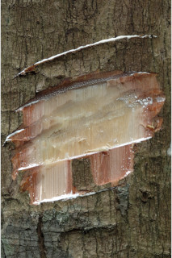
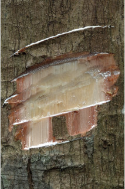
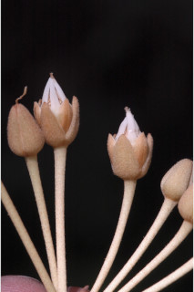
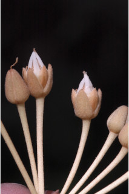

Trees up to 25 m tall.
25 ಮೀ ಎತ್ತರದವರೆಗಿನ ಗಾತ್ರದ ಮರಗಳು.
Trees up to 25 m tall.
மரங்கள் 25 மீ. உயரம் வரை வளரக்கூடியது.
Bark grey, smooth, flaky when mature; blaze pink.
ತೊಗಟೆ ಬೂದು ಬಣ್ಣ ಹೊಂದಿದ್ದು,ಬಲಿತಾಗ ಚಕ್ಕೆಯೇಳುವ ಮಾದರಿಯಲ್ಲಿರುತ್ತದೆ; ಕಚ್ಚು ಮಾಡಿದ ಜಾಗ ನಸುಗೆಂಪು .
Bark grey, smooth, flaky when mature; blaze pink.
மரத்தின் பட்டை சாம்பல் நிறமானது, வழுவழுப்பானது, முதிரும் போது பெரிய செதில்களாக உதிருபவை; உள்பட்டை பிங்க் நிறமானது.
Branches with architecture of “Aubreville_model”; young branchlets terete, ferruginously tomentose when young, later glabrous.
ಕಿರುಕೊಂಬೆಗಳು “ಆಬ್ರೆವಿಲ್ಲೆ” ಮಾದರಿಯಲ್ಲಿರುತ್ತದೆ;ಎಳೆಯ ಕಿರುಕೊಂಬೆಗಳು ದುಂಡಾಗಿದ್ದು,ಎಳೆಯದಾಗಿದ್ದಾಗ ತುಕ್ಕು ಬಣ್ಣದ ಸೂಕ್ಷ್ಮ ಮೃದು ತುಪ್ಪಳದಿಂದ ಕೂಡಿದ್ದು ನಂತರ ರೋಮರಹಿತವಾಗುತ್ತವೆ.
Branches with architecture of “Aubreville_model”; young branchlets terete, ferruginously tomentose when young, later glabrous.
கிளைகள் “ஆப்ரவில் மாதிரி” முறையில் கிளைக்கும்; சிறியநுனிக்கிளைகள் குறுக்குவெட்டுத் தோற்றத்தில் வளையமானது, இளம்பருவத்தில் உரோமங்களுடையது, முதிரும் போது உரோமங்களற்றது.
Latex white, profuse.
ಸಸ್ಯ ಕ್ಷೀರ ಹಾಲಿನ ಬಿಳಿ ಬಣ್ಣ ಹೊಂದಿದ್ದು ವಿಫುಲವಾಗಿರುತ್ತದೆ.
Latex white, profuse.
வெள்ளை நிற பால் அதிகளவு சுரக்கிறது.
Leaves simple, alternate, spiral, clustered at twig ends; petiole up to 2 cm long, stout, terete to planoconvex in cross section, tomentose when young; lamina 10-21 4.5-7 cm, obovate, oblanceolate, apex acuminate with blunt tip, base cuneate - attenuate, margin entire, coriaceous, black when dry above, brown beneath, glabrous; midrib raised above; secondary nerves 8-10 pairs, looped near margin; tertiary nerves broadly reticulate.
ಎಲೆಗಳು ಸರಳವಾಗಿದ್ದು ಪರ್ಯಾಯ ಮತ್ತು ಸುತ್ತು ಜೋಡನಾ ವ್ಯವಸ್ಥೆಯಲ್ಲಿದ್ದು ಕುಡಿಕೊಂಬೆಗಳ ತುದಿಯಲ್ಲಿ ಗುಂಪಾಗಿರುತ್ತವೆ;ತೊಟ್ಟುಗಳು 2 ಸೆಂ.ಮೀ.ವರೆಗಿನ ಉದ್ದವಿದ್ದು, ದೃಢವಾಗಿದ್ದು,ದುಂಡಾಗಿರುವುದರಿಂದ ಅಡ್ಡ ಸೀಳಿದಾಗ ಸಪಾಟ ಪೀನ ಮಧ್ಯದವರೆಗಿನ ಆಕಾದಲ್ಲಿರುತ್ತವೆ, ಎಳೆಯದಾಗಿದ್ದಾಗ ದಟ್ಟ ಮೃದುತುಪ್ಪಳದಿಂದ ಕೂಡಿರುತ್ತದೆ,ನಂತರ ರೋಮರಹಿತವಾಗಿರುತ್ತದೆ; ಪತ್ರಗಳು 10 -21 X 4.5 –7 ಸೆಂ.ಮೀ. ಗಾತ್ರ,ಬುಗುರಿಭರ್ಜಿಯ ಆಕಾರ ಹೊಂದಿದ್ದು,ಮೊಂಡಾಗ್ರವುಳ್ಳ ಕ್ರಮೇಣ ಚೂಪಾಗುವ ಮಾದರಿಯ ತುದಿ,ಬೆಣೆ-ಒಳಬಾಗಿದ ಬುಡ,ನಯವಾದ ಅಂಚು, ತೊಗಲನ್ನೋಲುವ ಮೇಲ್ಮೈ ಹೊಂದಿದ್ದು ಒಣಗಿದಾಗ ಮೇಲ್ಭಾಗ ಕಪ್ಪಾಗಿರುತ್ತದೆ ,ತಳಭಾಗಕಂದು ಬಣ್ಣದಲ್ಲಿರುತ್ತದೆ,ರೋಮರಹಿತವಾಗಿರುತ್ತದೆ;ಮಧ್ಯನಾಳ ಪತ್ರದ ಮೇಲ್ಭಾಗದಲ್ಲಿ ಮೇಲೆದ್ದಿರುತ್ತದೆ; ಎರಡನೇ ದರ್ಜೆಯ ನಾಳಗಳು 8 - 10 ಜೋಡಿಗಳಿದ್ದು, ಅಂಚಿನ ಬಳಿ ಕುಣಿಕೆಗೊಂಡಿರುತ್ತವೆ; ಮೂರನೇ ದರ್ಜೆಯ ನಾಳಗಳು ವಿಶಾಲ ಜಾಲ ಬಂಧ ನಾಳ ವಿನ್ಯಾಸದವು.
Leaves simple, alternate, spiral, clustered at twig ends; petiole up to 2 cm long, stout, terete to planoconvex in cross section, tomentose when young; lamina 10-21 4.5-7 cm, obovate, oblanceolate, apex acuminate with blunt tip, base cuneate - attenuate, margin entire, coriaceous, black when dry above, brown beneath, glabrous; midrib raised above; secondary nerves 8-10 pairs, looped near margin; tertiary nerves broadly reticulate.
இலைகள் தனித்தவை, மாற்றுஅடுக்கமானவை, சுழல் போன்று அமைந்தவை, சிறுகிளைகளின் நுனியில் இலைகள் கூட்டமாக மற்றும் நெருக்கமாக காணப்படும்; இலைக்காம்பு 2 செ.மீ. நீளமானது, தடித்தவை, குறுக்குவெட்டுத் தோற்றத்தில் வளையமானது முதல் பிளேனோகான்வக்ஸ், இளம்பருவத்தில் உரோமங்களுடையது; இலை அலகு 10-21 X 4.5-7 செ.மீ., தலைகீழ் முட்டை வடிவானது, தலைகீழ் ஈட்டி வடிவானது, அலகின் நுனி சிறிது அதிக்கூரியதுடன் அதன் முனை மழுங்கியது, அலகின் தளம் ஆப்பு வடிவானது-அட்டனுவேட், அலகின் விளிம்பு முழுமையானது, கோரியேசியஸ், உலரும் போது அலகின் மேற்பரப்பு கருப்பு நிறமானது, அலகின் கீழ்பரப்பு ப்ரவுன் நிறமானது, உரோமங்களற்றது; மையநரம்பு மேற்புறத்தில் அலகின் பரப்பைவிட உயர்ந்து இருக்கும்; இரண்டாம் நிலை நரம்புகள் 8-10 ஜோடிகள், ஒன்றொடுன்று விளிம்பின் அருகில் (லுப்) இணைந்தவை; மூன்றாம் நிலை நரம்புகள் அகன்ற வலைப்பின்னல் போன்றவை.
Flowers in axillary clusters or solitary, white; pedicel up to 4 cm long.
ಹೂಗಳು ಅಕ್ಷಾಕಂಕುಳಿನಲ್ಲಿನ ಗುಚ್ಛಗಳಲ್ಲಿರುತ್ತವೆ ಅಥವಾ ಒಂಟಿಯಾಗಿರುತ್ತವೆ,ಬಿಳಿ ಬಣ್ಣ ಹೊಂದಿರುತ್ತವೆ; ತೊಟ್ಟು 2 ಸೆಂ.ಮೀ. ವರೆಗಿನ ಉದ್ದ ಹೊಂದಿರುತ್ತದೆ.
Flowers in axillary clusters or solitary, white; pedicel up to 4 cm long.
மலர்கள் இலைக்கோணங்களில் தொகுப்பாகமைந்தவை அல்லது தனித்தவை, வெள்ளை நிறமானது; மலர்காம்பு 4 செ.மீ. நீளமானது.
Berry, 3.5 cm long, ellipsoid, beaked; seed one.
ಬೆರ್ರಿ 3.5 ಸೆಂ.ಮೀ. ಉದ್ದವಿದ್ದು,ಅಂಡವೃತ್ತದ ಆಕಾರದಲ್ಲಿದ್ದು ಕೊಕ್ಕಿನ ಸಮೇತವಿರುತ್ತದೆ;ಬೀಜದ ಸಂಖ್ಯೆ 1.
Berry, 3.5 cm long, ellipsoid, beaked; seed one.
முழுச்சதைகனி (பெர்ரி), 3.5 செ.மீ. நீளமானது, நீள்வட்ட வடிவானது, நீட்சியுடையது; ஒர் விதையுடையது.

 



 
